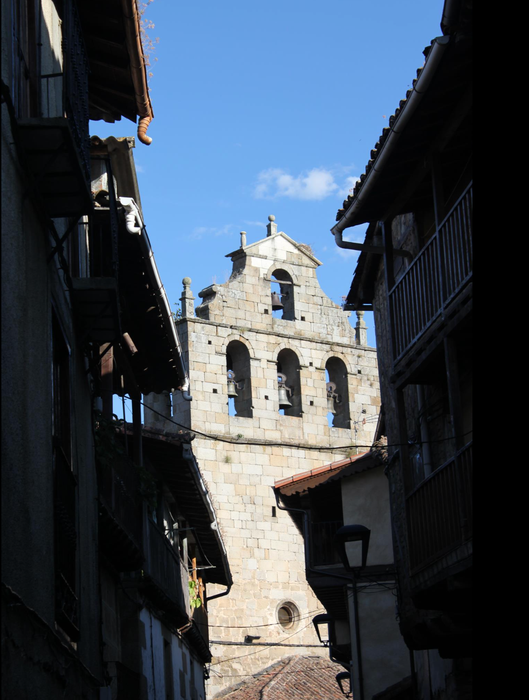
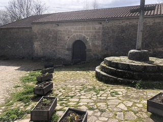

📚 Guía Histórica de San Martín del Castañar
🏰 Castillo de San Martín del Castañar

Construido en el siglo XV sobre fortificaciones anteriores, este castillo dominaba el valle del río Francia. En el siglo XIX, se convirtió en cementerio municipal. Actualmente alberga el Centro de Interpretación de la Reserva de la Biosfera. Más información
Curiosidad: Excavaciones han encontrado cerámica medieval, evidenciando su importancia defensiva.
🏟️ Plaza de Toros

Una de las plazas de toros más antiguas de España, transformada en el siglo XVII a partir del patio de armas del castillo. Su forma ovalada permite la celebración de capeas, una tradición centenaria. Más información
Curiosidad: Las capeas siguen realizándose en agosto, manteniendo una tradición de más de 300 años.
⛪ Iglesia de San Martín
Construida en el siglo XIII en estilo gótico-mudéjar, con reformas renacentistas y barrocas. Su pórtico renacentista y sus retablos barrocos la hacen única. Más información
Curiosidad: En el siglo XX se descubrieron pinturas murales ocultas tras el yeso.
⛲ Fuente de los Dos Caños y Portalón

Construida en el siglo XVI, esta fuente renacentista abasteció a los vecinos durante siglos. El Portalón, anexo a la plaza, era usado para presenciar eventos públicos. Más información
Curiosidad: Durante las fiestas, los jóvenes siguen la tradición de ser "bautizados" en la fuente.
🙏 Ermita del Socorro
Fundada en el siglo XV en honor a San Sebastián, alberga la imagen de la Virgen del Socorro. Ha sido un lugar de peregrinación durante siglos. Más información
Curiosidad: En épocas de sequía, los vecinos organizaban procesiones para pedir lluvia.
🌉 Puente Medieval y Calzada Romana

Este puente del siglo XIV cruza el río Francia y ha sido esencial en el comercio de la región. Se cree que la calzada romana que pasa por él era parte de una ruta secundaria. Más información
Curiosidad: Las marcas en la piedra podrían ser inscripciones de antiguos canteros.
🍷 Bodega Medieval

Una bodega del siglo XVI que mantiene viva la tradición vinícola de la Sierra de Francia. Hoy en día ofrece experiencias enológicas con vinos de la uva Rufete. Más información
Curiosidad: Se dice que los vinos de la Sierra se sirvieron en la boda de los Reyes Católicos.
🌄 Cultura y Tradiciones
San Martín del Castañar conserva tradiciones como la festividad de San Martín de Tours en noviembre, con procesiones y eventos culturales. También destaca la matanza tradicional, que sigue realizándose en los meses de invierno.
Curiosidad: Durante la matanza, se preparan embutidos siguiendo recetas centenarias.